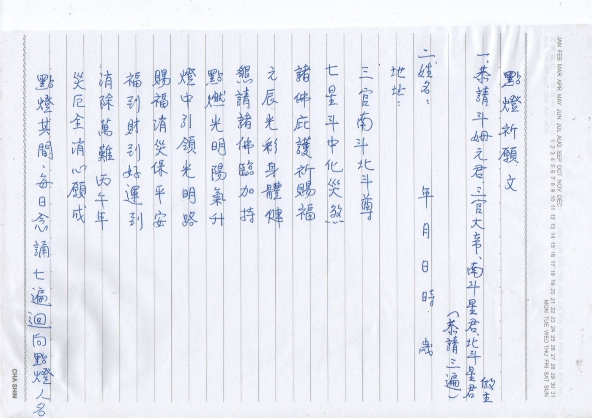

easeSutra
舒經
Copy the Heart Sutra by hand, one character per cell, with nothing but your finger. When the last of its 260 characters is written, your handwriting becomes a vertical scroll you can share.
Product overview · September 2026
舒經
般若波羅蜜多心經
觀觀
自自
在在
菩菩
薩薩
行行
深深
般般
心
Origin
Copying a sutra is
the quietest practice.
One stroke at a time, the mind returns to the present.
But paper, brush and scripture are rarely within reach.
Your phone always is.
easeSutra · Why
02 / 10
Flow
Three steps to a finished scroll.
壹
Choose a sutra
The Heart Sutra, 260 characters, is built in. Pick up where you left off, or start from the first character.
貳
Write one character per cell
A faint model character guides your finger. Every character is saved the moment you write it.
參
It becomes a piece
Your handwriting is laid out as a vertical scroll. Save it to Photos, or share it right away.
easeSutra · Flow
03 / 10
Demo
The whole flow,
in 28 seconds.
A real screen recording from the current build. No cuts, no speed-up.
- 0:00
Start on a finished piece, step back to the library, and open the Heart Sutra.
- 0:05
Write 觀, 自, 菩, 薩. Faint guide, one cell at a time. Back and Clear are right there.
- 0:22
Tap Done. The page renders as a vertical scroll, ready to save or share.
easeSutra · Demo
04 / 10
Heart SutraCharacter 1 of 260
觀觀
自Clear
Back
Next
- Trace
A faint guide. Just follow it.
No calligraphy training needed. The grey character is only a guide; every stroke you make is your own.
- Saved
Every character saved instantly
Three characters on the commute, ten before bed. Leave without confirming, and come back exactly where you stopped.
- Undo
Step back, fix one character
A bad stroke doesn't mean starting over. Go back one cell and rewrite just that character.
easeSutra · Writing
05 / 10
般若波羅蜜多心經
觀自在菩薩行深般若波羅蜜多時照見五蘊皆空度一切苦厄舍利子色不異空空不異色色即是空空即是色受想行識亦復如是舍利子是諸法空相不生不滅不垢不淨不增不減是故空中無色無受想行識無眼耳鼻舌身意無色聲香味觸法無眼界乃至無意識界無無明亦無無明盡乃至無老死亦無老死盡無苦集滅道無智亦無得以無所得故菩提薩埵依般若波羅蜜多故心無罣礙無罣礙故無有恐怖遠離顛倒夢想究竟涅槃三世諸佛依般若波羅蜜多故得阿耨多羅三藐三菩提故知般若波羅蜜多是大神咒是大明咒是無上咒
Page 1 of 2 · 2026.09.20
Output
- Vertical
Right to left, twenty per column
The rightmost column carries the title, followed by ten columns of text. It reads like a page of scripture, not a screenshot.
- Fitted
Every character centered and scaled
The real bounds of each stroke are scaled to 80% of the cell. Written large or small, the page comes out even.
260characters
2pages
1080 × 1920full-screen phone ratio
easeSutra · Output
06 / 10
Share
Finish,
then share.
Save to Photos in one tap, or open the system share sheet.
Instagram, LINE, Messages: they all work out of the box.
Save to Photos
Share…
Page 2
Page 1
easeSutra · Share
07 / 10
Tech
A simple skeleton: five units, one job each.
SwiftUI
Native iOS 17
iPhone first. Three screens, linear navigation, no settings to fiddle with.
PencilKit
System-grade handwriting
Strokes are captured and serialized by Apple's own engine. Finger or Apple Pencil, both work.
JSON
Local storage, no cloud
Progress and strokes stay on the device. No account, and nothing is ever uploaded.
Pure Fn
Layout as a pure function
Strokes in, paged images out. Coordinates are unit-testable, and a new sutra needs no logic changes.
easeSutra · Tech
08 / 10
Research
Can a phone read a handwritten prayer sheet?

Test sheet · 點燈祈願文 · ~120 characters, vertical, ballpoint pen
- Apple Vision
Reads about 9 in 10 characters
On-device, two seconds, free. Good enough to see what the sheet is about.
- The misses
Every error is a look-alike
大辛 for 大帝, 笑厄 for 災厄. Shape is right, meaning is wrong. You need to know the text to fix them.
- On-device LLM
Fixed 1 to 3 of 11 errors
Apple's on-device model only corrected words we spelled out in the hint. Too small for semantic repair.
easeSutra · Research
Claude
Bring your own scripture. Claude reads it into the library.
1 · Photo
Snap the sheet
A sutra page, a temple prayer, a mantra card. Vertical or horizontal, print or handwriting.
→
2 · Apple Vision
Draft on device
Fast, free first pass. Gives Claude the layout and a rough transcript to work from.
→
3 · Claude API
Read with understanding
Claude Opus 5 sees the image and the draft, knows the liturgical context, and returns a clean text. Matched to a known sutra, or added as new.
三官大辛
三官大帝
Deity name, not a character shape
北斗星店
北斗星君
Same title appears twice on the page
笑厄全消
災厄全消
"Laughing misfortune" makes no sense
劉燈其間
點燈期間
Echoes the title of the sheet
Only the photo leaves the device, and only when the user chooses to import. Copying stays fully offline.
easeSutra · Claude
Get one sutra right,
then take the next step.
- 一
More sutras
Great Compassion Mantra, Diamond Sutra. The data model is ready; only the text is missing.
- 二
Straight to Instagram Stories
The output is already 9:16. All that's left is wiring up the URL scheme.
- 三
Bring your own scripture
Photograph a sheet, Claude reads it into the library. Then gentle stroke hints while you copy.
遠遠
離離
顛顛
倒倒
夢夢
想想
究究
竟竟
easeSutra · Next
09 / 10
easeSutra
舒經
One character per cell. The mind returns to the present.
舒經
Thank you
10 / 10